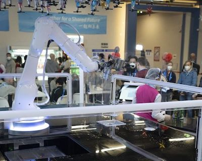

The Top 11 Productivity Tips for Software Engineers 08/03/2022
5 Reasons You Should Become a Software Developer or Engineer 01/03/2022
Why do software engineers make so much? 20/02/2022
Beijing Winter Olympic Village Robot Restaurant 08/02/2022
Essential Types of Software Every Business Needs 12/01/2022
The Top 11 Productivity Tips for Software Engineers 08/03/2022
1. The productivity tips for coding engineers
Become more productive by working fewer hours
Minimize distractions
Take full advantage of automation
Get a mentor
Use Scrum
Continuously refactor code and write code documentation
Work on other projects and learn new skills
Read books
Don’t optimize prematurely
Get proper sleep
DStream your projects to stay disciplined and committed
2. 5 Reasons You Should Become a Software Developer or Engineer 06/01/2022
The reasons for becoming a software engineer
Test your problem-solving skills
Get creative with code
Project-based work structure
Continuous learning opportunities
Collaboration across teams
3. Why do software engineers make so much? 20/02/2022
Software engineers make so much money because there is enormous demand for their skillset and not enough supply, the incredible value they bring to businesses and the general difficulty of the role. Good developers are hard to come by and the rise of technology has meant companies need more of them than ever. Technology changes a lot and the role can be quite demanding which adds to the amount developers are paid.
4. Beijing Winter Olympic Village Robot Restaurant 08/02/2022
The Winter Olympics opening in Beijing this week, organisers are employing a range of automated devices to ensure efficient food delivery, while reducing the risk of transmission of the virus, which has brought the world to a virtual halt for two years. A robot bartender will be serving cocktails during the games

5. Essential Types of Software Every Business Needs
8 essential types of software every business needs 12/01/2022